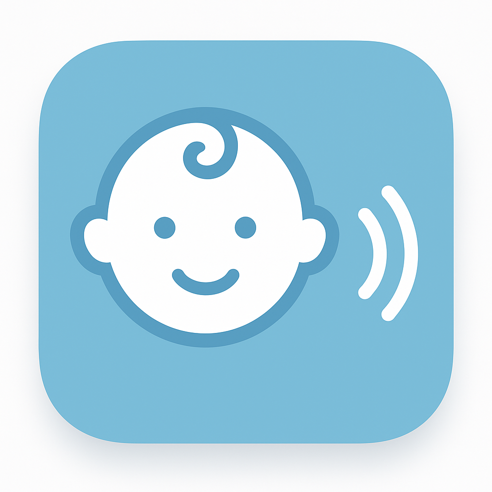

Warum viele Eltern keine Cloud-Übertragung wollen
Das Babyphone gehört zu den intimsten Geräten im Haushalt: Es überträgt Geräusche oder Bilder aus dem Kinderzimmer – einem der privatesten Räume der Familie. Dass diese Daten bei Cloud-fähigen Geräten über externe Server geleitet werden, ist vielen Eltern erst dann bewusst, wenn sie tiefer in die Datenschutzerklärungen ihrer Geräte schauen.
Konkrete Gründe für Skepsis gegenüber Cloud-Babyphones:
- Datenspeicherung: Manche Anbieter speichern Audioaufnahmen oder Videoclips auf ihren Servern, manchmal auch ohne explizite Zustimmung.
- Drittanbieter-Weitergabe: In manchen Datenschutzerklärungen ist die Weitergabe von Nutzungsdaten an Dritte erlaubt.
- Sicherheitslücken: Cloud-verbundene IoT-Geräte waren in der Vergangenheit Ziel von Hackerangriffen. Fälle, bei denen Unbefugte auf Babyphone-Kameras zugriffen, wurden öffentlich bekannt.
- Abhängigkeit vom Anbieter: Wenn der Anbieter den Cloud-Dienst einstellt, hört das Gerät auf zu funktionieren.
Das sind keine theoretischen Bedenken. Es sind Fragen, die sich Eltern zurecht stellen – und die für die Wahl zwischen Cloud und lokal relevant sind.
Wie lokale WLAN-Lösungen funktionieren
Bei einem lokalen Babyphone – sei es Hardware oder App – bleibt die Verbindung innerhalb des eigenen Heimnetzwerks. Das Sender-Gerät (z.B. ein altes Smartphone im Kinderzimmer) und das Empfangsgerät (z.B. das eigene iPhone) kommunizieren direkt über den heimischen Router, ohne dass Daten ins Internet geleitet werden.
Technisch bedeutet das: Kein externer Server zwischen Eltern und Babyphone. Was im Kinderzimmer passiert, bleibt im eigenen Netzwerk. Das Bild oder der Ton wird nicht auf irgendwelchen Servern eines App-Anbieters gespeichert.
Vorteile lokaler WLAN-Lösungen
- Datenschutz: Keine Übertragung an externe Server, kein Zugriff durch den Anbieter möglich.
- Keine Abhängigkeit: Funktioniert auch ohne Internet – solange das heimische WLAN läuft.
- Keine Abo-Kosten: Viele Cloud-Babyphones verlangen monatliche Gebühren für erweiterte Funktionen. Lokale Lösungen arbeiten ohne solche Modelle.
- Geringe Latenz: Lokale Übertragung ist oft schneller als der Umweg über externe Server.
- Wiederverwendung alter Geräte: Ein altes iPhone oder iPad kann als Sender-Gerät dienen, ohne Zusatzhardware kaufen zu müssen.
Grenzen lokaler Lösungen – ehrlich erklärt
Lokale WLAN-Lösungen haben klare Einschränkungen, die man kennen sollte bevor man sich für sie entscheidet:
- Reichweite begrenzt: Sobald man das Heimnetzwerk verlässt – beim Einkaufen, im Büro – ist keine Überwachung möglich. Das ist der fundamentale Unterschied zu Cloud-Lösungen.
- WLAN-Qualität entscheidend: Ein schwaches Signal zwischen Kinderzimmer und dem eigenen Gerät kann zu Aussetzern führen.
- Kein Notfall-Fernzugriff: Für Eltern die das Baby bei einer anderen Betreuungsperson lassen und trotzdem überwachen wollen, ist eine reine WLAN-Lösung nicht geeignet.
- Funktionsumfang: Spezialisierte Hardware-Babyphones bieten oft mehr Zuverlässigkeit und Features als App-basierte Lösungen.
Fazit: Lokale WLAN-Babyphones sind keine universelle Lösung. Sie passen gut für Eltern die nachts zuhause sind und maximalen Datenschutz wollen. Wer das Baby auch von unterwegs überwachen möchte, braucht eine Cloud-fähige Lösung – sollte dann aber die Datenschutzerklärung des Anbieters sorgfältig lesen.
Datenschutz bei Baby-Apps generell
Auch Baby-Begleiter-Apps – also Apps für Schlaftracking, Stillprotokoll oder Entwicklungsmeilensteine – unterscheiden sich erheblich in ihrer Datenpolitik. Manche synchronisieren alles mit der Cloud, andere speichern lokal.
Für Eltern die ihre Baby-Daten nicht aus der Hand geben wollen, sind lokale Apps die bessere Wahl: Keine Registrierung, keine Cloud-Sync, alle Daten auf dem eigenen Gerät.

Das sichere WLAN-Babyphone ohne Cloud: Live-Bild, Ton, Bewegungs- und Geräuscherkennung sowie verständliche Schlafanalyse. Verbindung direkt im Heim-WLAN – ohne Cloud-Zwang, ohne Pflichtkonto. Für iPhone, iPad und Mac.
Häufige Fragen
Was ist ein Babyphone ohne Cloud?
Ein Babyphone ohne Cloud überträgt Audio oder Video direkt über das lokale Heimnetzwerk (WLAN) vom Sender-Gerät auf das Empfangsgerät. Die Daten verlassen das eigene Netz nicht und werden nicht auf externen Servern gespeichert.
Ist ein WLAN-Babyphone ohne Cloud sicherer?
Für Datenschutz-bewusste Eltern ja: Audioübertragungen im eigenen Netz sind nicht von Dritten oder dem Anbieter einsehbar. Es gibt keine Weitergabe an externe Dienste. Allerdings ist die Reichweite auf das Heimnetzwerk begrenzt.
Welche Nachteile hat ein Babyphone ohne Cloud?
Die größte Einschränkung: Man kann das Baby nur überwachen, wenn man sich im gleichen WLAN-Netzwerk befindet. Fernzugriff von unterwegs ist ohne Cloud-Verbindung nicht möglich. Für Eltern, die häufig das Haus verlassen und trotzdem überwachen möchten, ist das ein wichtiger Faktor.
Werden bei Babyphone-Apps Daten in die Cloud übertragen?
Das hängt von der jeweiligen App ab. BabySorglos von Sorglos Apps ist für die direkte Verbindung im eigenen Heim-WLAN ausgelegt, ohne Cloud-Zwang und ohne Pflichtregistrierung.
Auf welchen Geräten funktioniert BabySorglos?
BabySorglos läuft auf iPhone, iPad und Mac mit aktueller Betriebssystemversion.